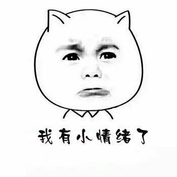
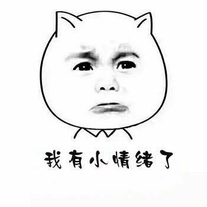

主宰
难道他的肉身，已然堪比婴期有惊人的出声，oh my gad!难以置信。炎阳公主与紫萱也略显苍白.手也是不停地哆嗦了起来，她 从未感觉到如此的压力，内心其实已经又来了一种紧张和兴奋，这种感觉她自己都感觉很奇怪。好像没有什么不好的预感。她
尽力的想平胡自己的气息，终于稍微安静了下来。随后开始泯然一笑。
尽管早有预料，可再次见到徐缺的这种实力，(来自大众的吐槽)qaq她们心中也是一片战栗。幻妃更是张大了口，
难以置信，整片脑袋都是几乎空白的，元婴期七层，怎么可能有这般实力what！！ 若是让他再苦修数十年，
岂不是，与此同时，天香谷的人也惊了。几名弟子满脸骇然。
 
